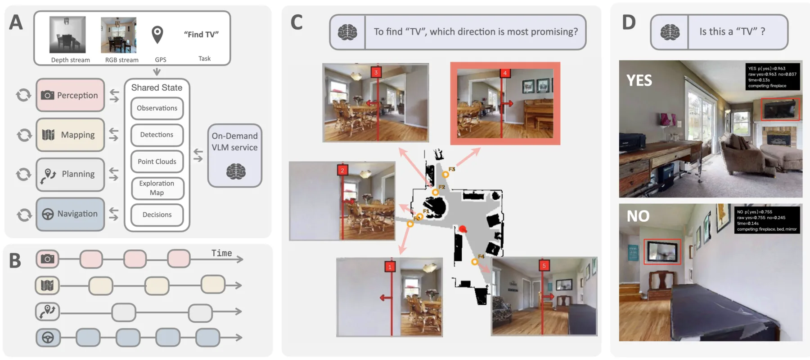
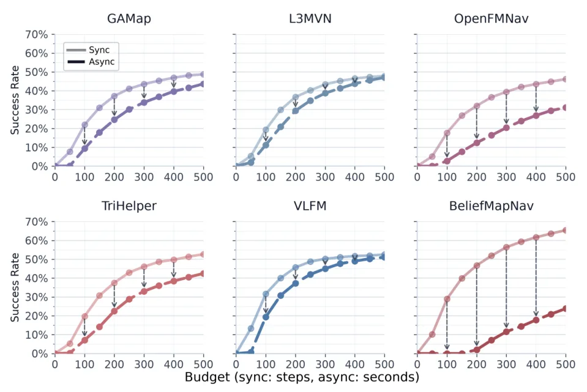
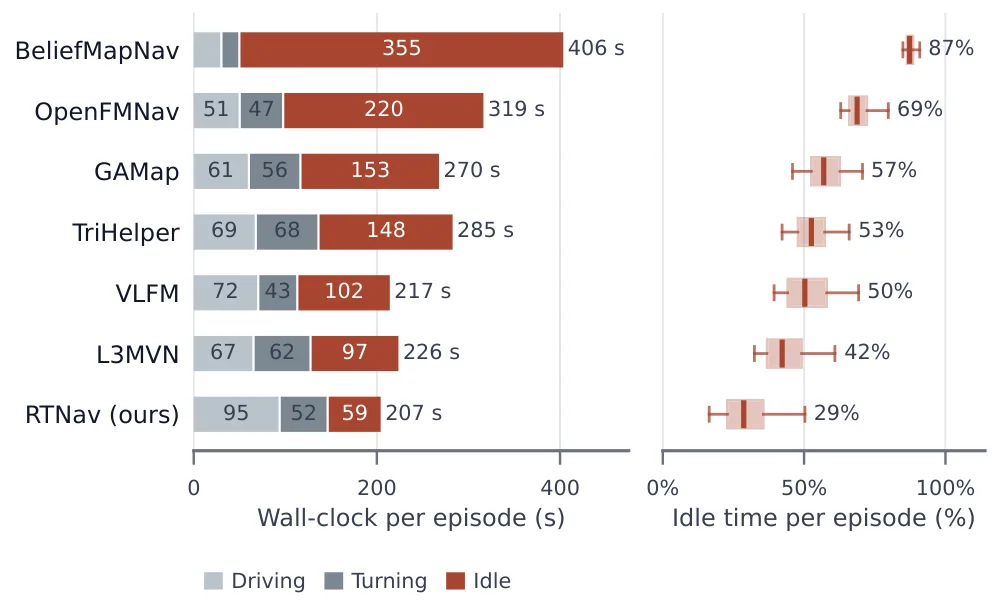
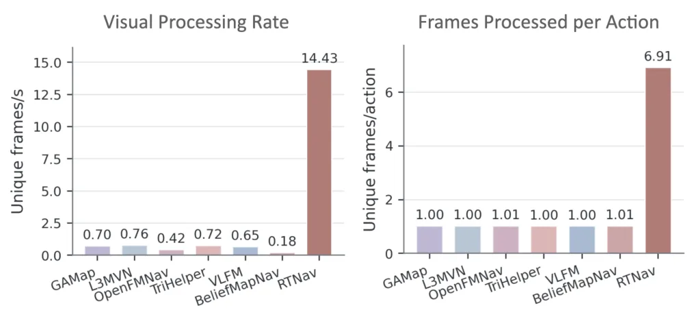
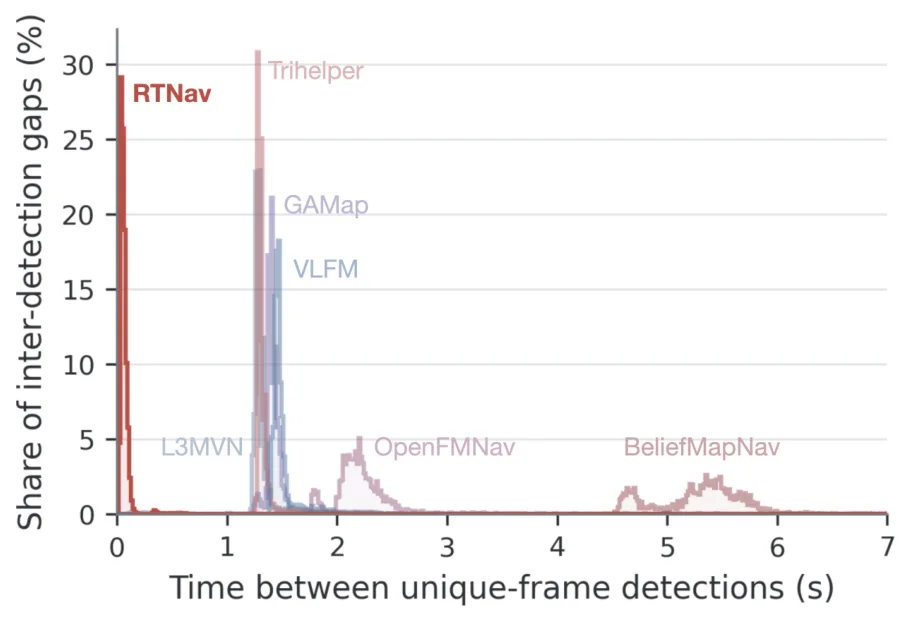
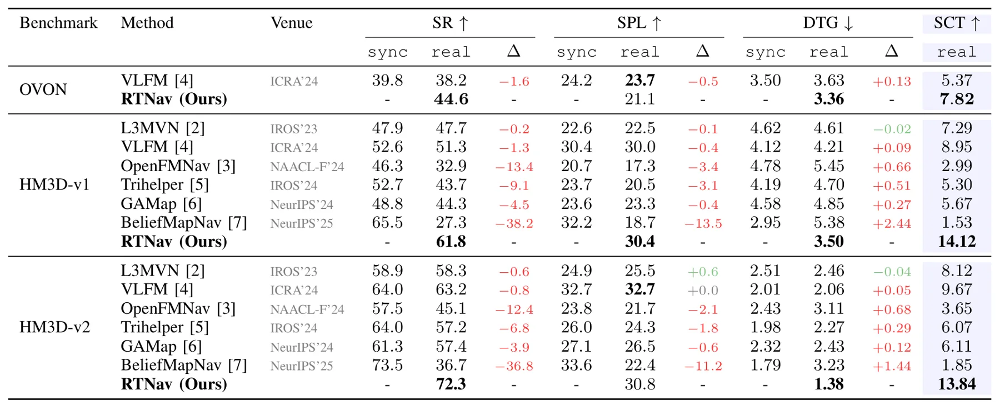
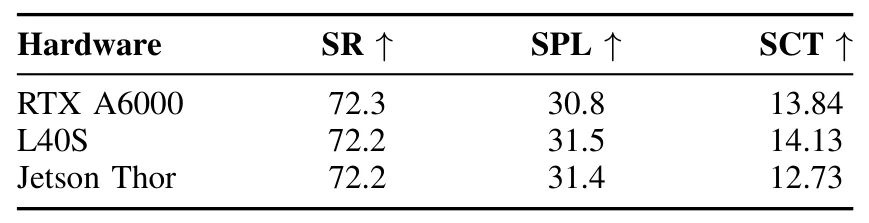
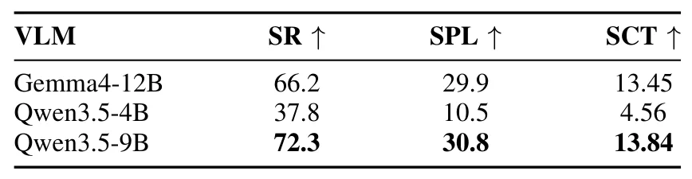

RTNav：迈向实时零样本目标导航RTNav: Towards Real-Time Zero-Shot Object Navigation
A 级 embodied navigation，直接量化 foundation model 推理延迟对闭环空间决策的影响。
一句话工作总结
把空间推理从同步模拟器拉回墙钟时间，为可靠具身导航提供系统级基线。
半海报（待补全）
当前记录尚未达到完整海报质量门槛，暂不把摘要或评分理由冒充方法/实验结论。
待补字段：桥接价值、方法摘要、可迁移模块、关键证据与数字、边界与风险、下一步实验。下一次任务需从论文全文或官方 HTML 提取证据后再发布。
摘要
RTNav 将推理延迟、异步环境推进和有限算力作为设计约束，使感知、建图、规划和导航模块独立运行。在 HM3D-v1、HM3D-v2 和 HM3D-OVON 的实时设置中最多提升 11% 成功率和 5.1 点 Success weighted by Completion Time。
Navigation in unknown environments to find unforeseen objects has become increasingly feasible with capable vision and language foundation models. However, these models also introduce non-negligible inference latency, which becomes an important concern when agents must operate continuously in the real world. Most state-of-the-art methods are still developed in synchronous simulators, where the environment waits for the agent to act and inference time is effectively free. As a result, agents are often designed around the sequential execution of perception, reasoning, and action, with little regard for time constraints. Under real-time execution, where wall-clock time counts towards the task budget, the inefficiencies of these architectures become clear. We show that recent zero-shot object navigation methods suffer consistent performance degradation under such realistic timing conditions. Motivated by this observation, we propose RTNav, a simple but effective architecture that treats inference latency, asynchronous environment stepping, and bounded compute as explicit design considerations. Evaluated on real-time variants of HM3D-v1, HM3D-v2, and HM3D-OVON, RTNav improves the success rate by up to 11% and the Success weighted by Completion Time by up to 5.1 points over prior work.
图表/页面预览

{kind=link}

{kind=link}

{kind=link}

{kind=link}

{kind=link}

{kind=link}

{kind=link}

{kind=link}
